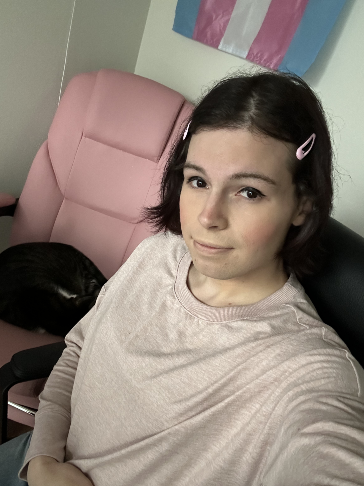
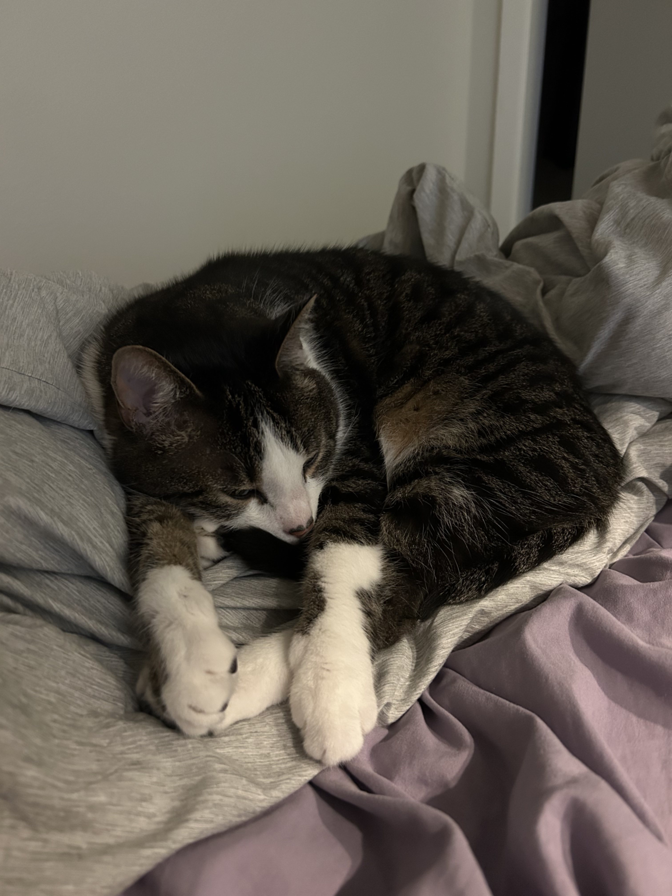

Hi!! My name is Lauren. I am a 24 year old trans woman living in the Seattle, Washington with my cat, Maxwell. I grew up in Minnesota, and went to college for at Florida State University. I graduated in 2024 with a Bachelors' degree in computer programming & applications, and a minor in statistics. I began medically transitioning in April 2025. My hobbies include coding, video games, traveling, and hiking. I also enjoy following and playing sports, mainly baseball, football (both kinds), and hockey. I'm a fan of all Minnesota and FSU sports teams. Even if they aren't very successful, I love them all the same. I played baseball and hockey growing up, although I was never talented at either. I would love to get into making art or music if I had the time and motivation!

Maxwell (better known as Maxy) is my 4 year old gray/white tabby cat. I've been raising him since he was a 5-week-old kitten. He is very sweet and cuddly, but is also known to sprint across the room and meow at the wall at times. He loves sitting in boxes, and playing with rubber bands and bottle caps more than his actual toys. Although he's wary of strangers at first, he warms up to people very quickly.

Ever since I was young, I've had this deep, intense yearning for the experience of being a girl. If I had ever been given the choice between being a man or woman with no consequences, I would have chosen woman every time. It manifested itself in a lot of different ways. I would see a cute outfit and wishing I could wear it. When I was home alone, I would go into my sister's room and try on her dresses. At night, I would wrap a blanket around my waist and pretend it was a skirt. At the time, it was just a pipe dream to me. I knew that if I ever tried embracing any level of femininity publicly, I would be ridiculed to no end. I tried so hard to suppress that side of me and suck up being a man as best I could. But that yearning never went away. It was a significant part of me, whether I liked it or not.
It wasn't until college when I had first had the realization that I could actually transition. It was spring semester of my freshman year. I was in my friend's bathroom, and I was hit with a sudden realization. I could actually be a woman if I wanted. I knew for certain I would be happier if I was. At the time, though, the social ramifications were just too much for me to bear. So, for the next four years, I kept it in. It was a secret that I could tell nobody.
After I graduated, I had more time and less distractions, and I thought a lot about my future and what I really wanted (and who I really wanted to be). I could continue living under a male identity, where I wouldn't have to go through the effort of transitioning, but I would forever be missing a major part of myself. Or, I could be myself and finally be truly content with my identity, even with all the challenges that entailed. I knew in my heart I needed to take the second option, but it was so, so terrifying to think about. I experimented a bit with feminine things: clothes, makeup, a feminine name. The more I leaned into expressing my feminine side, the happier and more content I felt. That's how I knew this was absolutely the right way to go. In late 2024, I made the full commitment that I would live the rest of my life as the woman I was meant to be. I talked to a therapist and did a ton of research online, and learned about a process called Hormone Replacement Therapy (HRT), which would make my body behave like that of a woman's. After a lot of waiting and trying to find a way to get it (which was difficult in Florida), I took my first dose on April 15, 2025.
Even after starting HRT, I still wasn't comfortable coming out to people about my identity. After a few months on HRT though, I felt I was ready to tell my mom and sisters. I was still very nervous, because I had no idea what their reaction would be. I put so much effort into hiding it. Would they be supportive? Or upset? Would they have had any idea? When I saw them in person, I took my mom for a walk and told her the truth. Her reaction was surprising to me. Not upset, not immediately supportive. Just utter shock and confusion. I tried my best to explain it all to her, but it definitely took a while for her to even remotely understand. My older sister, on the other hand, had an unexptected reaction for the opposite reason. She took it completely in stride, like it wasn't a surprise at all. As if I was telling her I made a new friend at school.